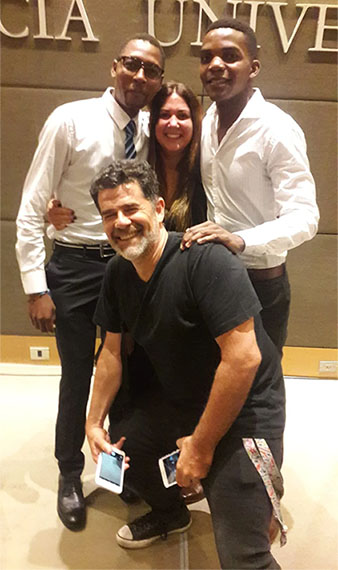

Desde que el padre Juan Gabriel Arias (53) misiona en Mozambique, el país africano ya no es un destino tan extraño para los argentinos. Hace unos días, apenas, un equipo de médicos de nuestro país, México y España trabajó codo a codo con él en la parroquia de Mangundze, en la provincia de Gaza, al sur de aquel país. Hasta el 3 de mayo habían hecho 995 consultas, 290 ecografías y 61 operaciones. Pero el sacerdote argentino, además de cuerpos y almas, se preocupa por las mentes de sus feligreses, y aún de quienes no lo son en una sociedad cuyas creencias religiosas son principalmente animistas. Hace dos días, Larcio Langane, uno de los chicos que se criaron a su alrededor en Gaza, subió una fotografía recibiendo un premio de 7 mil dólares (443.660 meticais, la moneda local) por ser el “emprendedor del año” en aquellas tierras gracias a los vasos que fabrica reciclando botellas de vidrio.
Ahora, a 9507 kilómetros de distancia, la voz de Larcio se oye como si estuviese acá a la vuelta. Habla perfecto castellano, aunque a veces se cuela alguna palabra en portugués, idioma oficial de aquel país. El joven mozambicano de 33 años vive junto a su novia paraguaya, Roxana Noguera Ruiz (26), en Bilene, un paradisíaco balneario. Los dos se conocieron en Argentina, donde Larcio -por impulso del padre Juan Gabriel- fue becado por la Universidad Católica Argentina para estudiar Relaciones Internacionales.
“Yo lo conocí al padre Juan Gabriel cuando vino a misionar en el año 2000 a Macía. Yo era una crianca, tenía 8 años. Mis padres eran agricultores, ellos ya fallecieron. Tengo cuatro hermanas mujeres que no pudieron estudiar y hoy se dedican al comercio informal. Y un hermano varón. Tengo buenos recuerdos de esa época. El más importante es que no teníamos pelotas para jugar al fútbol, así que cuando el padre volvía desde Argentina, nos traía pelotas y camisetas de Racing. También nos llevó a conocer la capital, Maputo, nos compraba comida, gaseosas. Todo eso lo recuerdo bien, quedó en mi memoria…”, cuenta Larcio.
Larcio fue uno de los dos primeros chicos mozambicanos en recibir la posibilidad de estudiar en la UCA. Llegó con un compañero llamado Jossias, de quien perdió el rastro. Con el tiempo, llegaron cinco más. Las últimas fueron dos mujeres, Carolina y Deolinda, que lo hicieron en enero de este año. Una de las condiciones que imponen para que vengan a estudiar es conseguir “padrinos” que les den alojamiento y solventen sus gastos cotidianos. A Larcio y Jossias los recibió el matrimonio de Julián Weich (el conductor de tevé) y su esposa Bárbara. “Al principio vivi con una familia peruana cerca de la parroquia Natividad de María, la de Barracas, donde había estado el padre Juan Gabriel. De hecho, allí y en Mozambique fui monaguillo suyo. Después Julián y Barbie nos encontraron un departamento en Honduras y Scalabrini Ortíz, que nos prestaron. Ya conocíamos Buenos Aires, sabíamos las calles. Teníamos independencia y nos pudimos dedicar al estudio. Los fines de semana nos llevaban a su casa en un country. Fueron nuestra familia en Argentina.